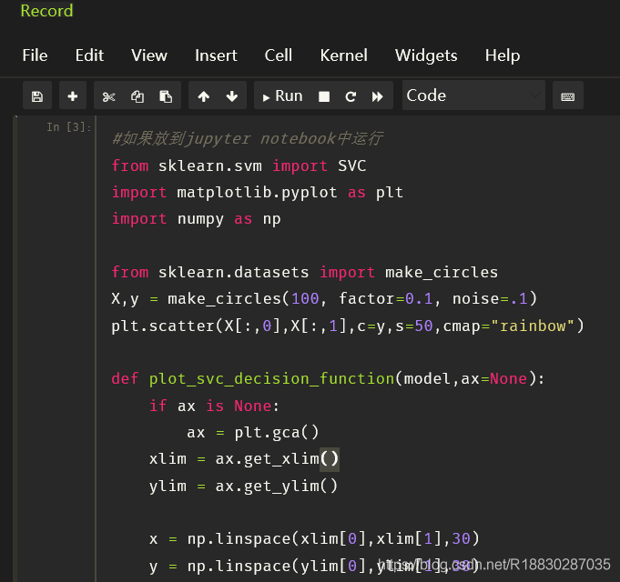

# 概述
为了搭建一个开箱即用的 Python 开发环境，结合个人平时用到的场景，将常用的 Python 库封装进 Docker 容器中，实现换电脑后可迅速重建开发环境，同时也是用于内网（无法连接互联网）环境的开发环境快速准确搭建。遂有此文：
# Jupyter 官方容器关系图，供选择时参考
https://jupyter-docker-stacks.readthedocs.io/en/latest/using/selecting.html#image-relationships
经测试， base 、 minimal 等容器开启后的默认状态（不启动 Python 等内核）内存消耗都差不多，都是 85M 左右。
# 常用启动参数
# 重启 jupyter 内核不会重启容器
-e RESTARTABLE=yes
所有的容器默认启动 JupyterLab ，要改回传统的 Notebook ，需要指定变量 DOCKER_STACKS_JUPYTER_CMD 参数来启动：
| DOCKER_STACKS_JUPYTER_CMD | 后端 | 前端 |
|---|---|---|
| lab (default) | Jupyter Server | JupyterLab |
| notebook | Jupyter Notebook | Jupyter Notebook |
| nbclassic | Jupyter Server | Jupyter Notebook |
| server | Jupyter Server | None |
| retro* | Jupyter Server | RetroLab |
# 最高权限运行
默认情况下 jovyan 用户不能使用 sudu 权限，也不能通过为该用户设置密码来获得 root 权限，这是为了暴露在公网上的 jupyterlab 容器的安全。但是，有一个名为 GRANT_SUDO 的环境变量改变这一点。以下启动将赋予 jovyan 用户无需密码的 root 权限:docker run -it --rm -p 8888:8888 -e GRANT_SUDO=yes --user root gcr.io/kubeflow-images-staging/tensorflow-notebook-cpu
# 选择 JupyterLab
JupyterLab 具有更方便的布局、更完善的插件支持等等，改用 JupyterLab 。
自行构建可参考：https://www.cnblogs.com/ulysessweb/p/14317515.html
关键是 apt-get 安装库文件之前使用 USER root 来使用 root 权限进行安装，否则安装不了，库文件安全之后，改回官方提供的默认用户 USER $NB_UID 进行 Python 包安装
# 自定义密码
https://jupyter-docker-stacks.readthedocs.io/en/latest/using/common.html#jupyter-server-options
# 中文包
pip install jupyterlab-language-pack-zh-CN
# 自定义构建
# 成品镜像
以下 Dockerfile 对应镜像地址：https://hub.docker.com/r/blackelks/jupyterlab-datascience
# Dockerfile
构建命令 docker build -t docker.io/blackelks/jupyterlab-datascience .
FROM jupyter/datascience-notebook | |
# 安装 lsp 自动补全插件、excel 查看插件，中文语言包、 onedarkpro 主题、 创建硬链接（lsp 官方推荐） | |
RUN pip install --no-cache-dir jupyterlab-language-pack-zh-CN jupyterlab-lsp 'python-lsp-server[all]' jupyterlab-drawio \ | |
&& jupyterlab_execute_time pyinstall openpyxl xlrd XlsxWriter xlutils xlwings xlwt pdfminer python-docx docx2pdf \ | |
&& pyexecjs selenium aiohttp httpx feapder[all] beautifulsoup4 requests lxml html5lib playwright matplotlib_inline \ | |
&& opencv-python matplotlib pyecharts scipy plotly wordcloud flask django fastapi psycopg2-binary pymongo sqlalchemy \ | |
&& pymysql pandas geopandas jieba tqdm unzip ddddocr loguru lars -i http://pypi.douban.com/simple/ --trusted-host pypi.douban.com \ | |
&& playwright install && ln -s / .lsp_symlink | |
RUN jupyter labextension install jupyterlab_onedarkpro | |
RUN jupyter labextension install jupyterlab-spreadsheet | |
# 设置显示语言为中文 | |
RUN mkdir -p /home/jovyan/.jupyter/lab/user-settings/@jupyterlab/translation-extension/ \ | |
&& echo '{"locale":"zh_CN"}'>/home/jovyan/.jupyter/lab/user-settings/@jupyterlab/translation-extension/plugin.jupyterlab-settings \ | |
# 不接收新闻 | |
&& mkdir -p /home/jovyan/.jupyter/lab/user-settings/@jupyterlab/apputils-extension/ \ | |
&& echo '{"fetchNews": "false"}'>/home/jovyan/.jupyter/lab/user-settings/@jupyterlab/apputils-extension/notification.jupyterlab-settings \ | |
# 启用插件 | |
&& mkdir -p /home/jovyan/.jupyter/lab/user-settings/@jupyterlab/extensionmanager-extension/ \ | |
&& echo '{"disclaimed": true}'>/home/jovyan/.jupyter/lab/user-settings/@jupyterlab/extensionmanager-extension/plugin.jupyterlab-settings \ | |
# 设置默认主题为 JupyterLab Dark----the one of two default themes. | |
&& echo '{"theme": "JupyterLab Dark"}'>/home/jovyan/.jupyter/lab/user-settings/@jupyterlab/apputils-extension/themes.jupyterlab-settings \ | |
# 开启自动补全 | |
&& mkdir -p /home/jovyan/.jupyter/lab/user-settings/@krassowski/jupyterlab-lsp \ | |
&& echo '{"continuousHinting": true}'>/home/jovyan/.jupyter/lab/user-settings/@krassowski/jupyterlab-lsp/completion.jupyterlab-settings \ | |
# 设置默认开启自动框号补全等 | |
&& mkdir -p /home/jovyan/.jupyter/lab/user-settings/@jupyterlab/notebook-extension/ \ | |
&& echo '{"codeCellConfig":{"autoClosingBrackets":true,"lineNumbers":true,"codeFolding":true,},"experimentalDisableDocumentWideUndoRedo":true,"kernelShutdown":true,"kernelStatus":{"showOnStatusBar":true,"showProgress":true},"markdownCellConfig":{"autoClosingBrackets":true,"lineNumbers":true,"lineWrap":"on","matchBrackets":true,"codeFolding":true,},"rawCellConfig":{"autoClosingBrackets":true,"lineNumbers":true,"lineWrap":"on","matchBrackets":true,"codeFolding":true,},"recordTiming":true}'>/home/jovyan/.jupyter/lab/user-settings/@jupyterlab/notebook-extension/tracker.jupyterlab-settings | |
# `jupyterlab-variableInspector` 帮助我们在 `jupyter lab` 中查看当前环境中存在的变量相关信息， | |
# 以美观的界面形式对多种类型的对象予以呈现。 | |
# https://cloud.tencent.com/developer/article/1971947 | |
RUN pip install --no-cache-dir lckr-jupyterlab-variableinspector -i http://pypi.douban.com/simple/ --trusted-host pypi.douban.com | |
# jupyterlab-system-monitor 通过在 jupyter lab 界面中添加资源监视器部件， | |
# 能帮助我们在工作过程中方便的看到 CPU、内存的实时占用情况 | |
RUN pip install --no-cache-dir nbresuse -i http://pypi.douban.com/simple/ --trusted-host pypi.douban.com \ | |
&& jupyter labextension install jupyterlab-topbar-extension jupyterlab-system-monitor | |
# docker run -itd --name=lab -p 8888:8888 -e CHOWN_HOME=yes -e NB_UID=1000 -e NB_GID=1000 -e RESTARTABLE=yes -e GRANT_SUDO=yes --user root docker.io/blackelks/jupyterlab-datascience:latest | |
# 补充库:faker 代码格式化、black isort | |
RUN pip install --no-cache-dir faker jupyterlab-code-formatter black isort -i http://pypi.douban.com/simple/ --trusted-host pypi.douban.com | |
# 代码格式化插件设置 | |
RUN mkdir -p /home/jovyan/.jupyter/lab/user-settings/@ryantam626/jupyterlab_code_formatter/ \ | |
&& echo '{"preferences":{"default_formatter":{"python":["isort","black"],}},"black":{"line_length":88,"string_normalization":true},"yapf":{"style_config":"google"},"autopep8":{"max_line_length":120,"ignore":["E226","E302","E41"]},"isort":{"multi_line_output":3,"include_trailing_comma":true,"force_grid_wrap":0,"use_parentheses":true,"line_length":88},"formatOnSave":true,"astyle":{"args":[]},"suppressFormatterErrors":false}'>/home/jovyan/.jupyter/lab/user-settings/@ryantam626/jupyterlab_code_formatter/settings.jupyterlab-settings | |
# 新增插件 `ipydatagrid`：https://github.com/bloomberg/ipydatagrid | |
RUN pip --no-cache-dir install ipydatagrid -i http://pypi.douban.com/simple/ --trusted-host pypi.douban.com | |
# 下载 ipydatagrid 的示例文件到工作目录 | |
RUN git clone https://github.com/bloomberg/ipydatagrid.git \ | |
&& mkdir -p ipyDataGrid示例 \ | |
&& mv ipydatagrid/examples/* ipyDataGrid示例 \ | |
&& rm ipydatagrid -rf | |
# 安装 darcula 主题并激活，为了不费时的重复构建，使用此层覆盖前面的主题设置 | |
RUN pip install --no-cache-dir theme-darcula -i http://pypi.douban.com/simple/ --trusted-host pypi.douban.com \ | |
&& echo '{"theme":"Darcula","theme-scrollbars":true}'>/home/jovyan/.jupyter/lab/user-settings/@jupyterlab/apputils-extension/themes.jupyterlab-settings |
# Notebook 相关 (弃用，需要时可参考)
# 安装主题
pip install jupyterthemes
# 更新主题
pip install --upgrade jupyterthemes
# 查看可用主题
jt -l
# 我个人喜欢亮一点的背景主题，于是选择了 grade3，它还支持语法高亮。下面是我的背景主题设置：
jt -t grade3 -f fira -fs 13 -cellw 90% -ofs 11 -dfs 11 -T -N |

-f (字体) -fs (字体大小) -cellw (占屏比或宽度) -ofs (输出段的字号) -T (显示工具栏) -N (显示自己主机名)
# 2. 代码自动补全
# 首先安装 nbextensions：
pip install --no-cache-dir jupyter_contrib_nbextensions | |
jupyter contrib nbextension install --user |
# 然后安装 nbextensions_configurator：
pip install --no-cache-dir jupyter_nbextensions_configurator | |
jupyter nbextensions_configurator enable --user |
如果提示缺少依赖，就使用 pip 安装对应依赖即可。
# 最后重启 jupyter
在弹出的 Home 面里，能看到增加了一个 Nbextensions 标签页，在这个页面里，勾选 Hinterland 即启用了代码自动补全，如图所示：
效果图：
https://www.cnblogs.com/shanger/p/12006161.html
# 其他备注信息
# Notebook 配置文件路径:
/home/jovyan/.jupyter/jupyter_notebook_config.py
# Notebook 语言文件目录
/opt/conda/lib/python3.10/site-packages/notebook/i18n
# 容器内工作目录
默认为 /home/jovyan/work ，可通过自定义环境变量来变更。